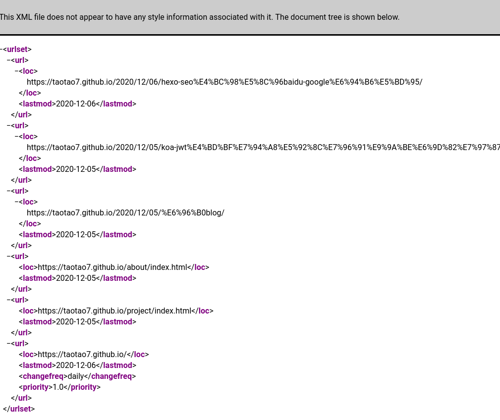
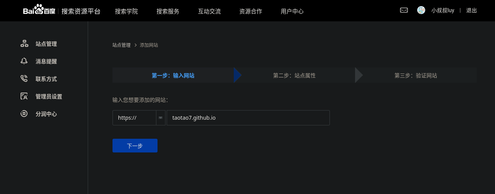
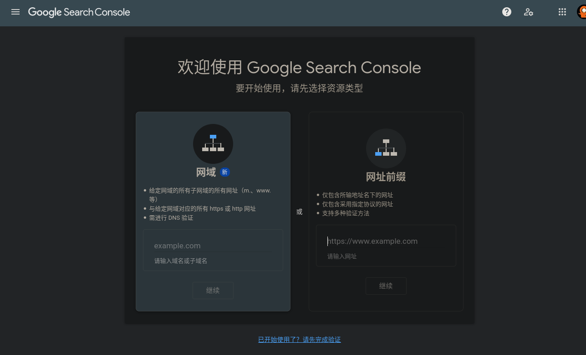
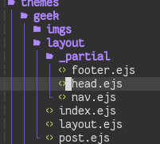
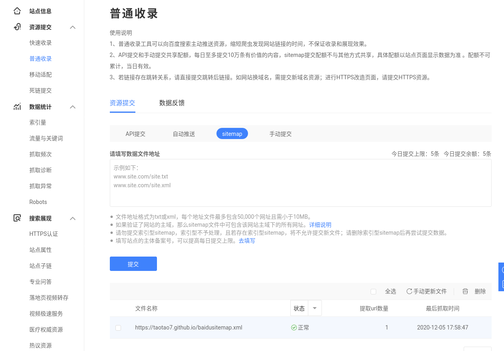
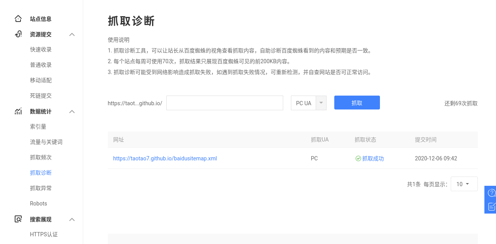
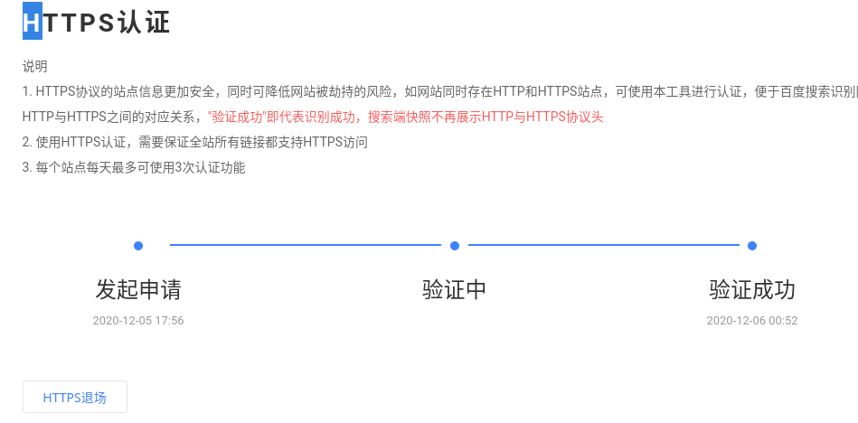
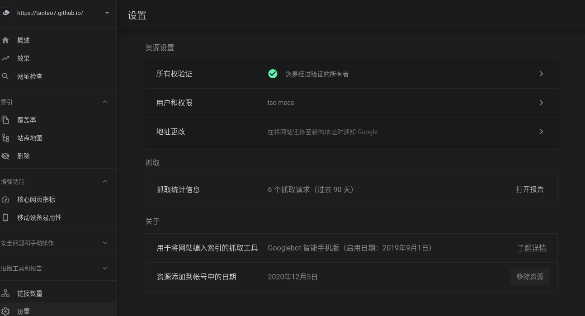

hexo 的 seo 优化
1 | npm install hexo-generator-sitemap --save |
首先用 npm 安装百度 sitemap 插件和网站的 sitemap 插件,之后在_config.yml 文件添加下面的配置
1 | sitemap: |
现在重新启动 hexo 就能在/sitemap.xml 和/baidusitemap.xml 查看到当前网站地图

接下来在百度和 google 提交你的网站,注意都需要登录你的百度 google 帐号才行,google 用第二个网址前缀提交，第一个不用想了


验证
提交之后会让你验证你的网站百度的是在提交过程中验证，因为我提交过了就没办法截图了.
反正你知道百度会给你一段 html 的代码你放在你主题的资源文件下的 head.ejs 里面就可以了

百度提交 sitemap


在普通收录的位置点击 sitemap 提交
抓取诊断的地方提交
最后的 https 认证一般两天就能通过

google sitemap

点击所有权认证其他和百度的方法一样在 head.ejs 里面添加给你的 html 代码,在站点地图的地方提交你的 sitemap